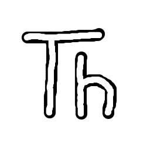

Thonny
L'IDE idéal pour débuter
Thonny est un environnement de développement intégré (IDE) spécialement conçu pour l'apprentissage de Python. Avec son interface simple et intuitive, il permet aux débutants de visualiser l'exécution du code pas à pas, ce qui facilite grandement la compréhension.
Caractéristiques principales :
- Interface Intuitive : Parfait pour les débutants, sans surcharge de fonctionnalités.
- Visualisation du Code : Voyez comment vos variables et votre code s'exécutent en temps réel.
- Débogage Facile : Trouvez et corrigez les erreurs rapidement.
- Gratuit & Open Source : Zéro coût, compatible Windows, Mac et Linux.
Meilleur pour : Les débutants qui apprennent Python
En savoir plus

Visual Studio Code
L'éditeur professionnel par excellence
VS Code est un éditeur de code gratuit et léger, créé par Microsoft. C'est le choix numéro 1 des développeurs professionnels grâce à sa flexibilité, sa puissance et son écosystème d'extensions incroyable. Il supporte pratiquement tous les langages de programmation.
Caractéristiques principales :
- Léger et Rapide : S'ouvre en quelques millisecondes.
- Extensions : Des milliers d'extensions pour ajouter des fonctionnalités.
- IntelliSense : Autocomplétion intelligente et suggestions de code.
- Débogage Intégré : Déboguer directement dans l'éditeur.
- Terminal Intégré : Exécutez des commandes sans quitter l'éditeur.
Meilleur pour : Les développeurs de tous niveaux, du web au backend
En savoir plus

Notepad++
L'éditeur de texte puissant et léger
Notepad++ est un éditeur de texte source gratuit et léger pour Windows. Malgré sa simplicité apparente, il offre des fonctionnalités avancées comme la coloration syntaxique, la recherche-remplacement régulière et les macros, ce qui en fait un excellent choix pour les développeurs qui aiment la simplicité.
Caractéristiques principales :
- Ultra Léger : Consomme très peu de ressources système.
- Coloration Syntaxique : Support de plus de 80 langages.
- Recherche Avancée : Recherche et remplacement avec expressions régulières.
- Onglets Multiples : Travaillez sur plusieurs fichiers simultanément.
- Gratuit & Open Source : Disponible sur Windows.
Meilleur pour : L'édition rapide de fichiers et les développeurs préférant la légèreté
En savoir plus